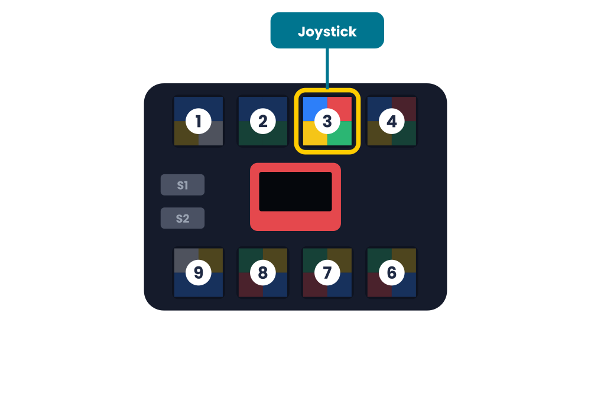
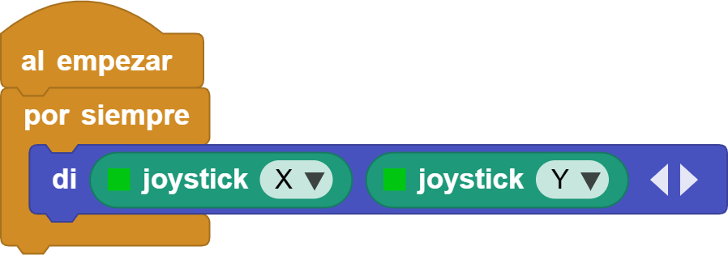
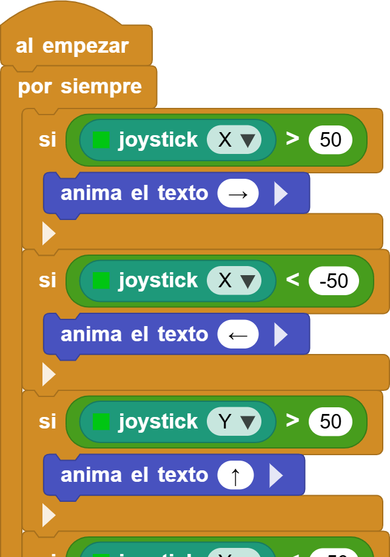

Actividad 8 · Las cuatro direcciones
Descubre los secretos del joystick
dos sensores a la vezsi anidados
Objetivo: Mostrar en la pantalla hacia dónde mueves el joystick.
Necesitas: Placa, cable USB y joystick.
Librerías: Pantalla LED y KidsIOT Engineering
1 Conecta

Conecta el joystick al puerto 3.
2 Investiga

El joystick no usa un pin normal: va por el «camino verde» (I2C), así que se lee con el bloque joystick de la librería del kit. Verás dos líneas: X (izquierda-derecha) e Y (arriba-abajo). Mueve la palanca y apunta los números:
| Movimiento | Línea que cambia | Número |
|---|---|---|
| Reposo | ||
| Izquierda | ||
| Derecha | ||
| Arriba | ||
| Abajo |
3 Programa
Predice, prueba y explica
- Predice: ¿qué número crees que da el joystick cuando no lo tocas?
- Prueba: monta el programa y ejecútalo.
- Explica: ¿por qué hacen falta dos números para saber la dirección?
El joystick da números de -100 a 100. Usamos 50 y -50 para saber hacia dónde lo empujas:

¿Te atreves?
- Añade el zumbador y que cada dirección tenga su nota.
- Cuando el joystick esté en el centro, que no salga nada.
- Inventa un juego de «Simón dice» con las direcciones.
Ábrelo en MicroBlocks arrastrando el archivo a la ventana o con Archivo › Abre.